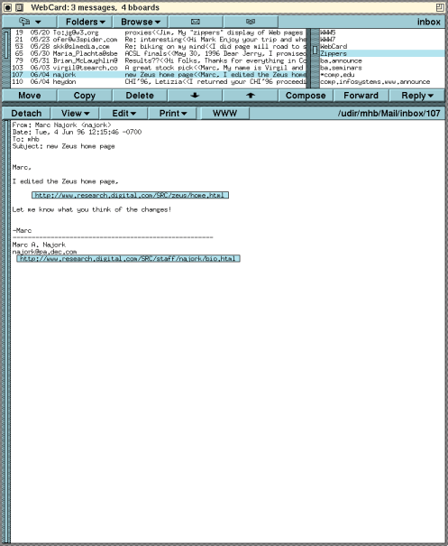
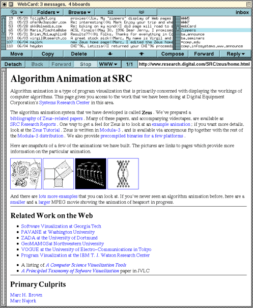
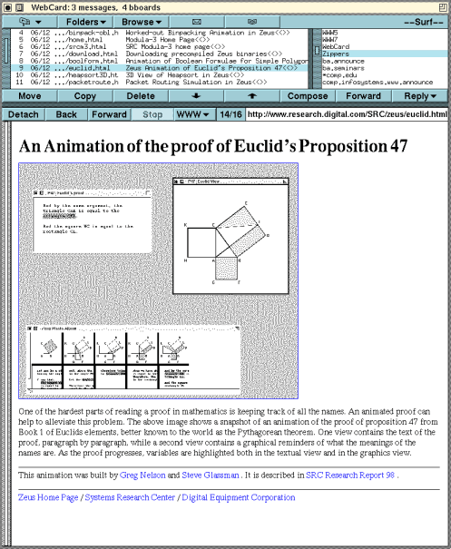
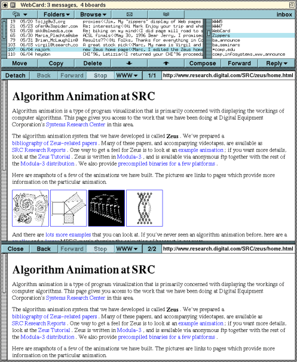
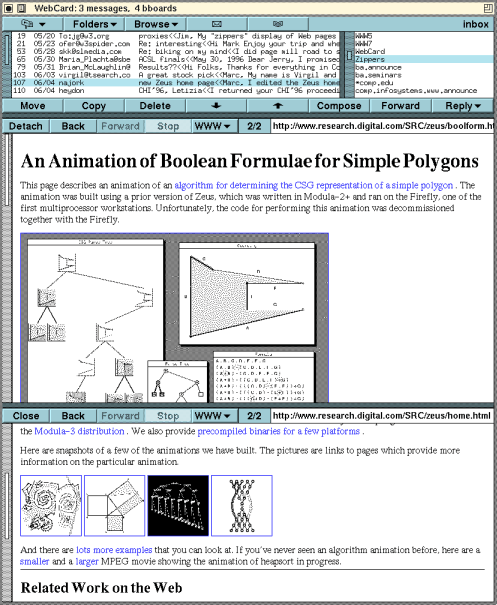

|  | Figure 1. This screen dump shows WebCard displaying the author's inbox. The open folder is "inbox," and the selected folder is "Zippers." The selected message, seen in the display pane, contains two URLs: one refers to the Zeus home page and the other to the sender's home page. |
|---|---|
|  | Figure 2. This screen dump is the result of clicking on the URL referring to the Zeus home page in the e-mail message shown in Figure 1. |
|  | Figure 3. This screen dump is the result of issuing the "Auto Surf" command from the Zeus home page in Figure 2. The links are retrieved and stored in the folder named "--Surf--", which is automatically opened after issuing the command. Thus, all links on the Zeus home page can be explored by simply using the up and down arrow keys to change the selected message. |
|  | Figure 4. This screen dump is the result of clicking on the "Detach" button when viewing the Zeus home page in Figure 2. The WebCard window now has a display pane (middle) and a detached pane (bottom). Initially, the display pane and the detached pane both show the same page. Clicking on links in either pane will cause a new page to be displayed in the display pane. In particular, because clicking on links in the detached page does not obscure the page, a typical use of detached panes is for displaying an index page (e.g., a home page) with many links. |
|  | Figure 5. This screen dump is the result of scrolling the page in the detached pane (bottom) in Figure 4, and then clicking on the leftmost icon. The new page is retrieved and displayed in the display pane (middle). |
{kind=link}
{kind=link}
{kind=link}
{kind=link}
{kind=link}